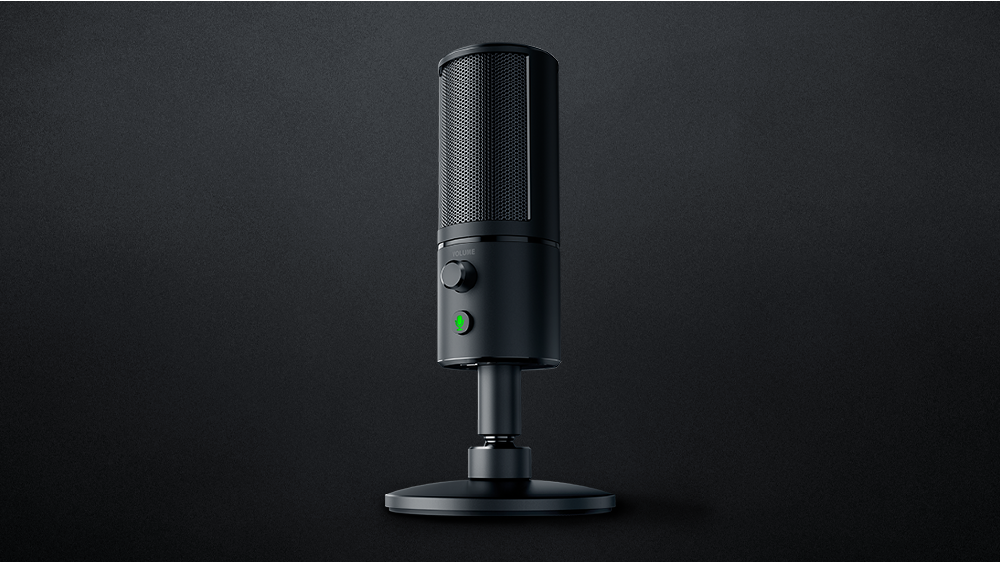

Razer Seiren Mic

The 3D model is of the Razer Seiren X Mic. This is a one to one recreation of the product detailing its sleek metallic and matte textures, angular shape, and light refractions. The shown render is in warm light environment.
Actually photograph of Razer Seiren Mic.

Here we can visualize how the product is assembled whilst showing the semantic workflow. The outline is symmetrical indicating no design flaws.

Different render iterations of the Razer Seiren X Mic in a white light environment.